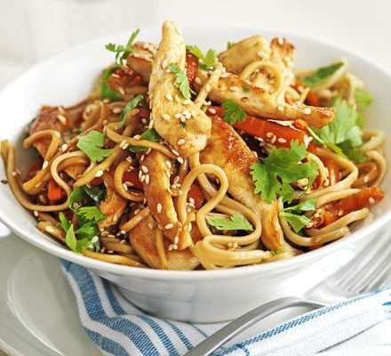

Chicken Stir Fry
Home

Description
A stir fry noodle dish, which provides a good source of protein and vegetables. The sauce used for this dish can be changed using any of the many stir fry sauces available at the stores. For this recipe I will be using Sweet chilly sauce.
Ingredients
- Egg fried noodles
- One onion
- Three garlic cloves
- Ginger
- One pepper
- Mushrooms and any other vegetables you prefer
- One Red Chilly (optional)
- Two chicken breasts or meat of your choice
- Spring onions
- stir fry sauce
- Seasonings
- Oil
Steps
- Dice the onions, peppers, ginger, garlic, chilly and any other vegetables. Dice the chicken breasts.
- Pre heat the pan and add a dazzle of oil beofore adding the onions and cook them until they start to soften before adding in some salt.
- Add the chicken to the pan and cook till it starts to brown
- Then add in the garlic ginger and chilly.
- Once they have cooked a bit add in the other vegetables and sprinkle in the seasonings.
- Bring a pot of water to boil and add the egg noodles to the pot
- Once the vegetables are all cooked through, add in the sweet chilly (or sauce of your choice)
- Once the egg noodles have been cooked for three minutes, drain the water out and wsh it with cool water.
- Add the noodles to the stir fry and mix the noodles alongside the sauce.
- Eat up!